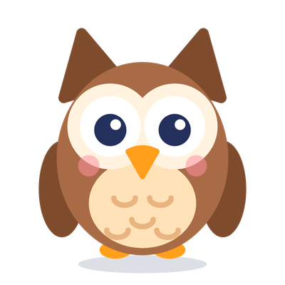

Literkowa przygoda z Sówką
Gra na iPhone’a, iPada i Androida, w której dziecko uczy się pisać słowa z „ó” i „u”, „rz” i „ż” „h” i „ch” oraz kiedy pisać wielką literę – przeciągając je do koszyków, a nie wkuwając reguł.

Jak się gra?
Sówka Ósia pokazuje słowo z luką, lektor czyta je na głos, a dziecko przeciąga je do koszyka z właściwą literą.
Gdy coś pójdzie nie tak, Sówka nie krzyczy – pokazuje poprawną pisownię i prostą regułę: „Stół – stoły. Słychać o, więc piszemy ó!”.
Mapa krain i przygód
Kolejne przygody: od Polany do Smoczej wieży z „ó” i „u”, nad Rzekę i do Wulkanu z „rz” i „ż”, przez Wioskę i Port na Lodowisko z „h” i „ch”, do Miasteczka i Kalendarza z wielką literą – a następne już w drodze.
Lektor czyta każde słowo
Grać mogą też dzieci, które dopiero uczą się czytać. Słowa i reguły są dopasowane do klas 1–2.
Gwiazdki i powtórki
Za gwiazdki Sówka dostaje czapki, opanowane słowa trafiają do albumu naklejek, a trudne wracają w Powtórce z Sówką po dniu, trzech i siedmiu dniach.
Darmowe karty pracy do druku
Ćwiczenia na papierze z tymi samymi słowami i regułami co w grze: ó czy u, rz czy ż, h czy ch, wielka czy mała litera. Z dyktandem i odpowiedziami dla rodzica i nauczyciela.
Dla rodziców
- Bez reklam i bez zbierania danych dziecka
- Bez kont i logowania – postępy zostają na urządzeniu
- Działa bez internetu
- Zakupy, ustawienia i linki tylko za bramką dla rodzica
- Strefa rodzica z postępami dziecka i wyłączaniem muzyki, dźwięków i lektora
Pełna wersja
Jednorazowy zakup, bez subskrypcji. Odblokowuje wszystkie krainy – także te, które dodamy w przyszłości. Dwie pierwsze krainy są za darmo, więc najpierw możecie spróbować.